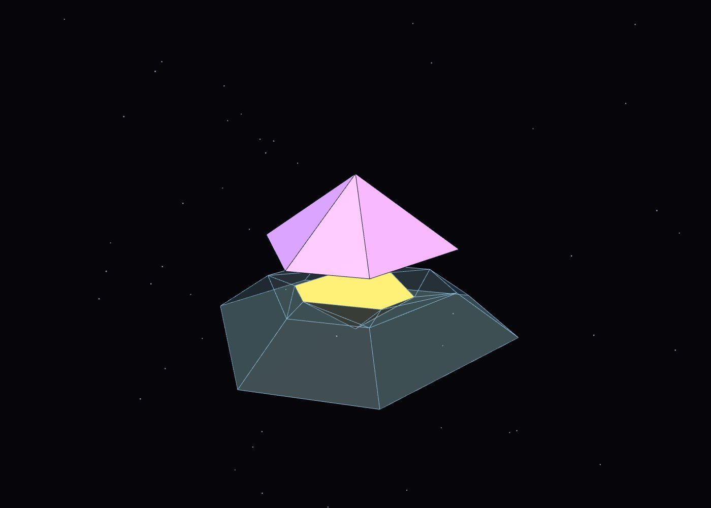
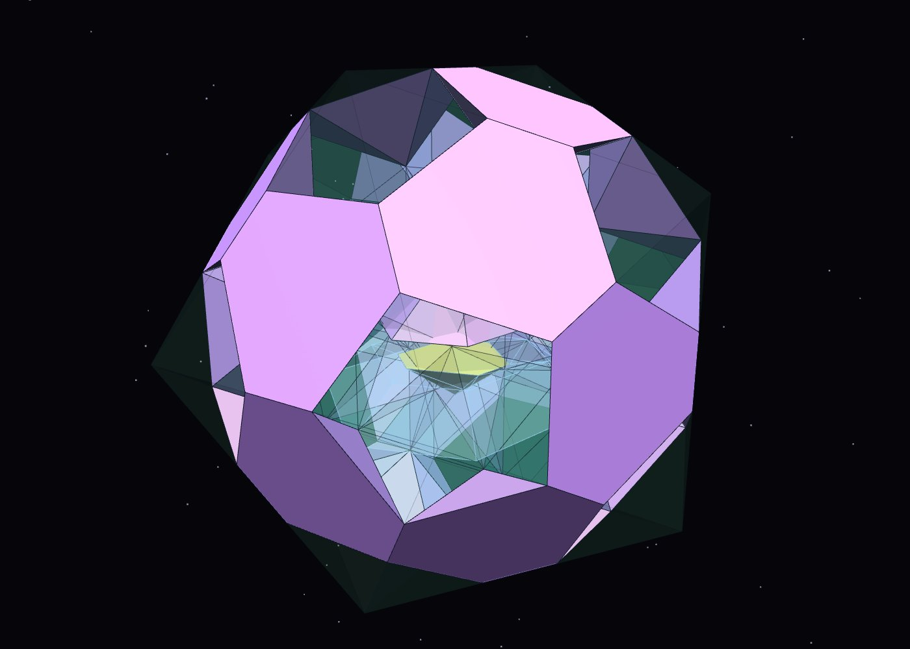
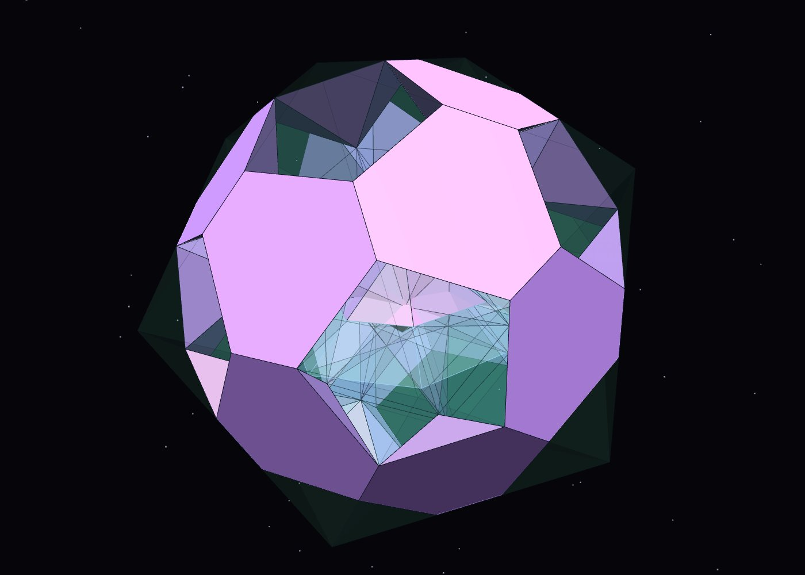
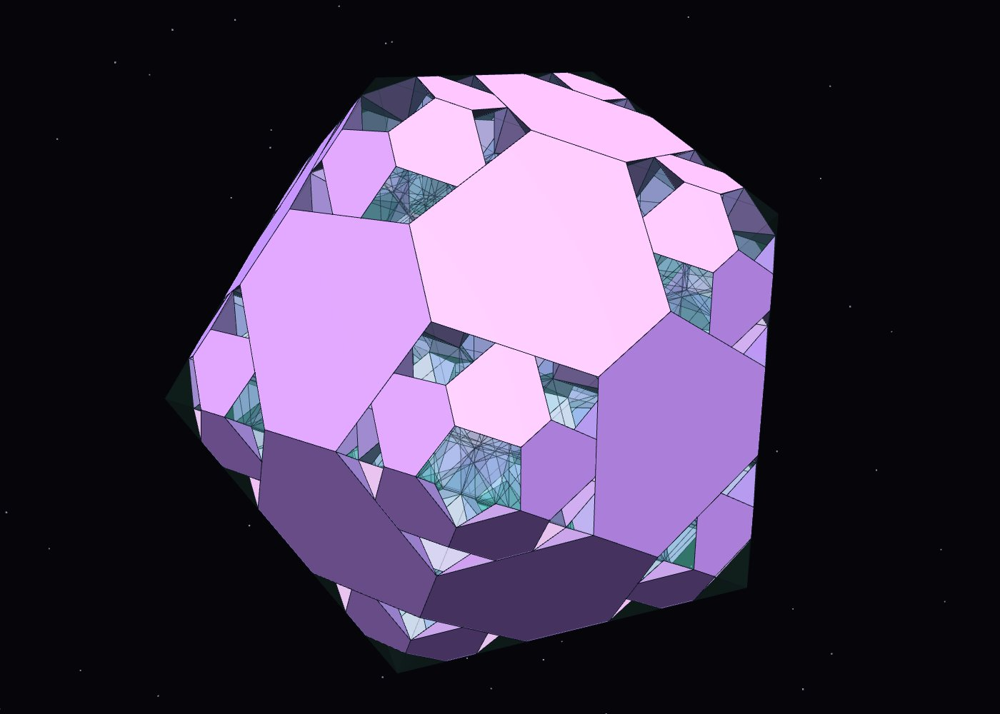
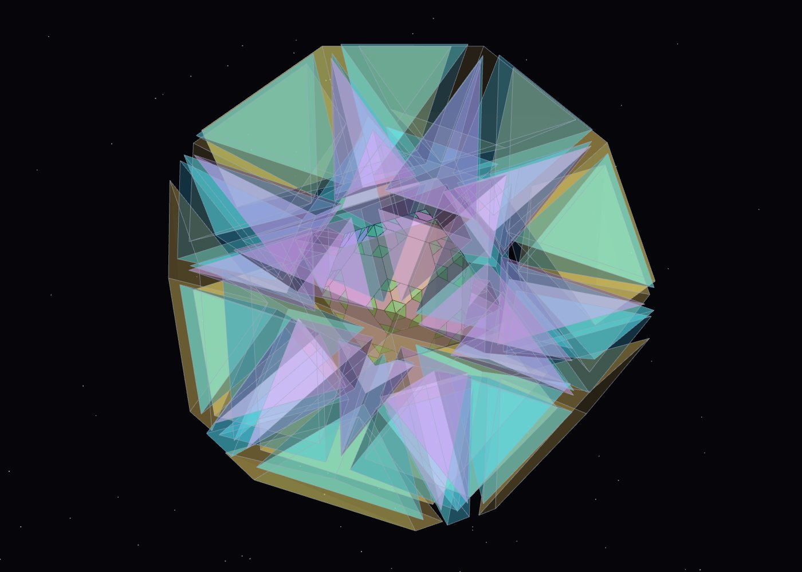
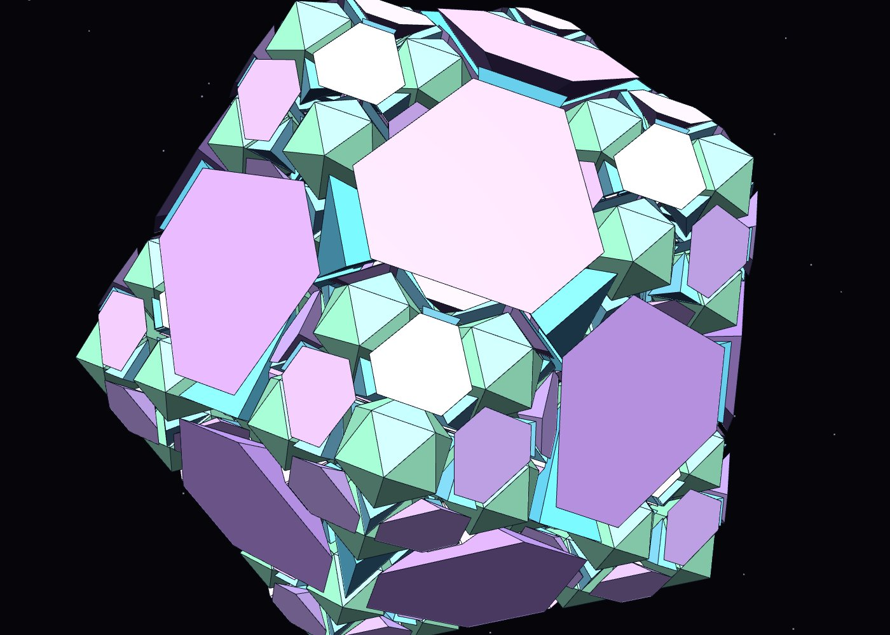
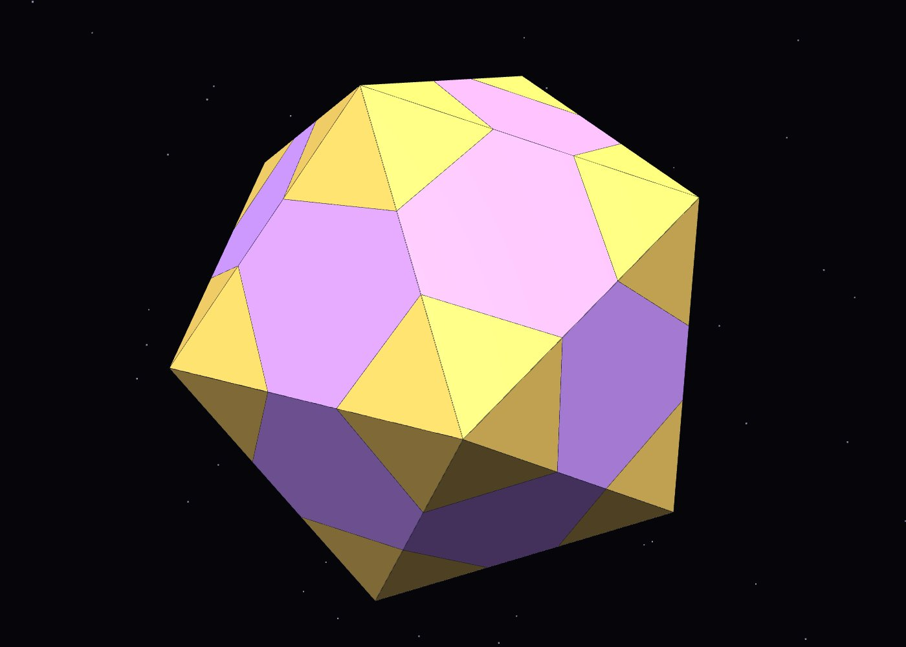
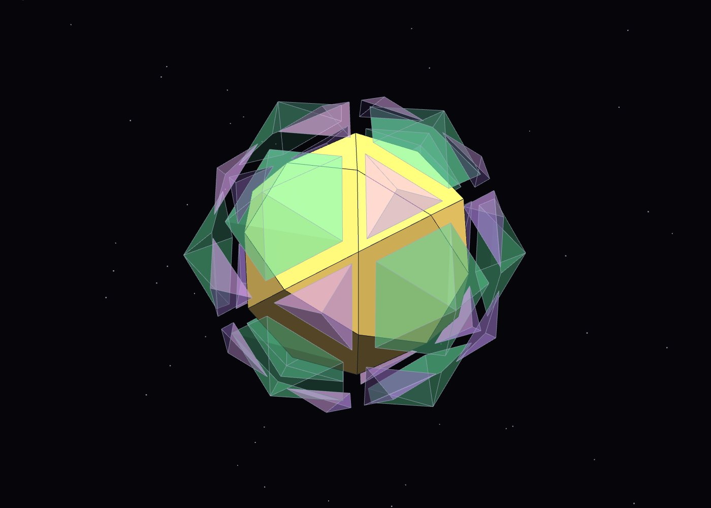
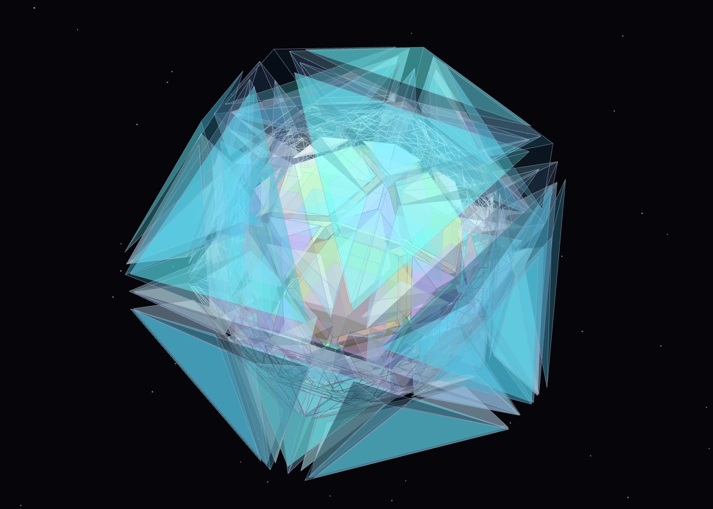

Figure drafts — Chain of Karma & Spheres of Dharma (DRAFT 2026-10-12, not for release)
Renders from the 3D model. For DICTO to choose, reject or ask for changes; captions provisional.

Draft 1. Pyramid growth rule (FUJI): φ·P = P + a copy of size 1/φ turned over + a side ring of three times P's volume.
Draft 2. The Lotus seed, pulled apart: icosahedron of edge φ² = 12 icosahedra + 1 of edge 1/φ + 60 AXE + 20 FUJI + 20 CLEO.
Draft 3. The Lotus seed, closed.
Draft 4. Chain of Karma, step 2: every icosahedron replaced by its own Lotus seed (1,569 pieces).
Draft 5. The dodecahedral Chain: D(1) = 12 J2 + I(1/φ) + 30 AXE + 20 CLEO, nested.
Draft 6. Endless view: the Chain continued inward.
Draft 7. The fullerene pattern on the Lotus seed surface.
Draft 8. Spheres of Dharma: the shared core (icosahedron and dodecahedron around one icosidodecahedron).
Draft 9. Spheres of Dharma: the six shells of one Ritsudō cycle, see-through.